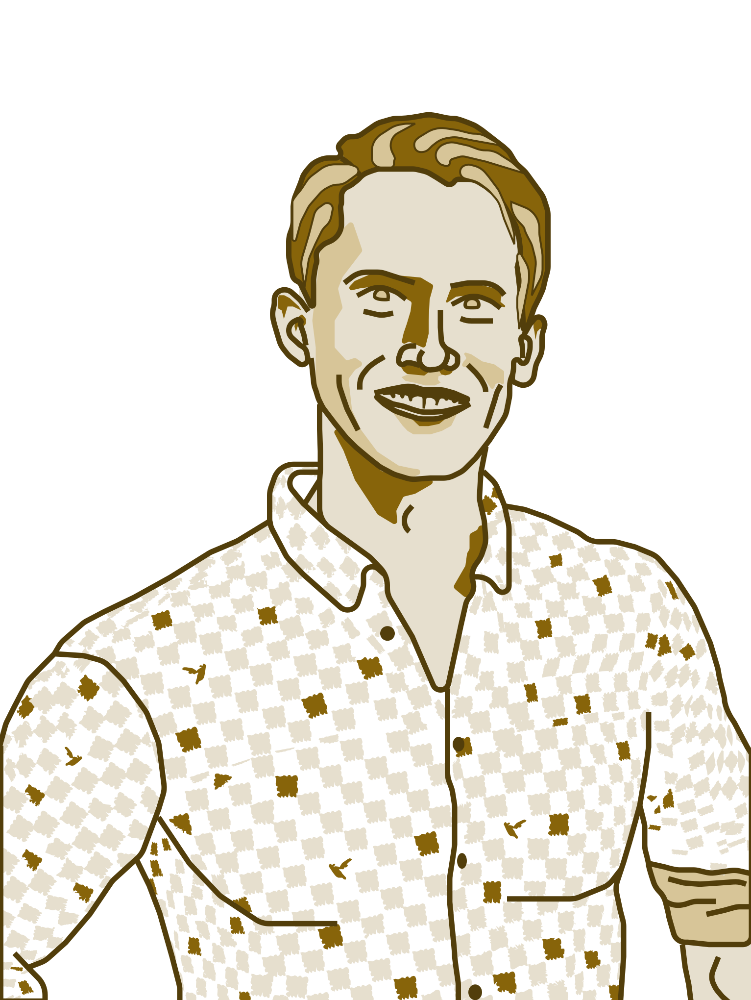

LIS & Epic systems by day. Fine art, photography, and general tinkering the rest of the time. Occasional xenomorph wrangler.

Started in biology and fine art at Metro State Denver. Ended up in a hospital. Found histotechnology and anatomic pathology fascinating — but not fulfilling. Creativity won.
Now I sit at the intersection of healthcare IT and design — building and optimizing LIS systems, integrations, and workflows for clinical labs while keeping one foot firmly in the art world.
The hobbies are not a bit. MIJ guitars, tubed headphone amps, sim racing, emergency prep, and the occasional xenomorph sprite — all get equal attention.